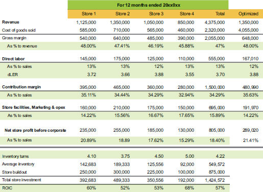

Location segment summary with ROI analysis

Now we see the true story! Store 4 is the one that makes us the best return on our investment. Store 4 sells less because they have taken a focused inventory approach to only stock the inventory that has good margin. It turns five times a year instead of the shotgun inventory approach Store 2 is using to stock more and see what sells. Which store do you think is more likely to wake up one day and realize they need to write-down inventory that will never sell? Store 2 is at a higher risk of developing stale inventory that you will eventually have to dump.
Store 4 also accomplished a lower buildout cost by having the landlord handle some renovation as part of their rent. The company also looked for retail space that was more ready to fit. Lower inventory and buildout all count to ROIC, and efficient use of capital allows for more stores to be opened. I would also think there are many more potential locations that would support $850K in revenue than $1.3M. This is a great example of why you cannot rely on the P&L alone in your analysis of best segment activity.